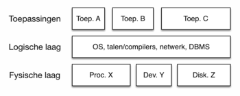

In het OSI-model (Open Systems Interconnection-model) is de fysieke laag de onderste laag en wordt vaak aangeduid als "Laag 1" of "PHY" (Physical Layer). De fysieke laag is verantwoordelijk voor de fysieke transmissie van gegevens over een communicatienetwerk.
Fysieke Media: De fysieke laag is verantwoordelijk voor het beheren van de fysieke media waardoor gegevens worden getransporteerd. Dit omvat verschillende soorten kabels (zoals koperen twisted pair-kabels, glasvezelkabels) en draadloze overdrachtssystemen (zoals WiFi of Bluetooth). De keuze van het fysieke medium heeft invloed op de maximale gegevenssnelheid, de afstand die gegevens kunnen reizen en andere prestatiekenmerken van het netwerk.
Signaalmodulatie: De fysieke laag definieert methoden voor het omzetten van digitale gegevens in analoge signalen en omgekeerd. Dit proces staat bekend als signaalmodulatie en is nodig om gegevens over fysieke media te kunnen verzenden. Voorbeelden van modulatietechnieken zijn amplitude-modulatie (AM) en frequentie-modulatie (FM) in radiocommunicatie.
Fysieke Connectoren en Interfaces: Het omvat specificaties voor fysieke connectoren, kabels en interfaces die nodig zijn om apparaten aan te sluiten op een netwerk. Denk bijvoorbeeld aan Ethernet RJ-45-connectoren, USB-connectoren of de aansluitingen op netwerkkabels.
Snelheid en Bandbreedte: De fysieke laag definieert de gegevenssnelheid waarmee gegevens worden verzonden, uitgedrukt in bits per seconde (bps). De bandbreedte van het fysieke medium bepaalt grotendeels de beschikbare gegevenssnelheid.
Fysieke Topologie: Dit omvat de fysieke rangschikking van apparaten in het netwerk en de manier waarop ze met elkaar zijn verbonden. Veelvoorkomende fysieke topologieën zijn ster-, bus-, ring- en draadloze topologieën.
Synchronisatie en Timing: De fysieke laag zorgt voor het synchroniseren van zender- en ontvangerklokken om ervoor te zorgen dat de gegevens correct kunnen worden ontvangen. Dit is essentieel om gegevensbetrouwbaarheid te waarborgen.
Ruis en Signaalintegriteit: De fysieke laag moet omgaan met externe factoren zoals elektromagnetische interferentie, ruis en signaaldegradatie die de kwaliteit van gegevensoverdracht kunnen beïnvloeden. Dit kan het gebruik van technieken zoals foutdetectie en -correctie met zich meebrengen.
Kortom, de fysieke laag is verantwoordelijk voor het omzetten van digitale gegevens in fysieke signalen en vice versa, en het zorgt voor de fysieke infrastructuur die nodig is voor communicatie via netwerken. Het legt de basis voor de bovenliggende lagen van het OSI-model door ervoor te zorgen dat gegevens fysiek van het ene apparaat naar het andere kunnen worden verzonden.
